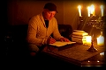
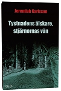
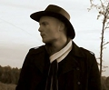
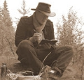

Mikael Jeremiah Karlsson
Socionom, litteraturvetare, författare.
| Född: | 1986-02-13 Ljungby, Ljungby fs, Ljungby kn. [1] |
|---|
| Levde: | 1991 Ritaren 15, Heimdalsg 10, Ljungby, Ljungby fs, Ljungby kn. [1] |
|---|
Noteringar
Jeremiah Karlsson (f. 1986) är socionom och litteraturvetare. Han har arbetat som socialsekreterare samt som utredare på olika utrednings- och behandlingshem. År 2006 blev han nominerad till Lilla Augustpriset med novellen ”Natt” som även sändes som följetong i Sveriges Radio Kronoberg. Året därpå var han nominerad i skrivartävlingen Ord -07 med novellen ”Den öververklige”.
”Tystnadens älskare, stjärnornas vän” är hans romandebut, Idus Förlag, 2012
www.idusforlag.se/tystnadens_alskare
Beskriving:
"Djupt inne i den småländska skogen bor elvaårige Staffan med pappa Tobias. Situationen för Staffan är svår. Pappa super. Mamma utnyttjar honom för egna syften. I skolan blir han mobbad och slagen. Samtidigt hopar sig mysterierna. Varifrån får pappa sina pengar? Och vem är den okände man som spionerar på Staffan då han vandrar skogsvägen hem?
Efter en rad anmälningar till socialtjänsten tar den nyutexaminerade socionomen Edvard sig an ärendet att utreda Staffans situation. Polis, skola och psykiatri involveras snart i ärendet. Frågorna hopar sig och Edvard tvingas allt närmare ett avgörande. Ett avgörande som oundvikligen kommer få ödesdigra konsekvenser.
”Tystnadens älskare, stjärnornas vän” är en nyskapande spänningsroman där läsaren på nära håll följer med socialtjänsten i utredningsarbetet med barn och familjer. Romanen skildrar med kritisk udd barn och föräldrars relation till samhället och skyggar inte för de svåra frågor som hela tiden är närvarande i detta spänningsfält.
Boken är häftad och har ca 450 sidor.
ISBN: 978-91-87001-21-5
www.idusforlag.se/tystnadens_alskare
Sorgens kammare, Idus Förlag, 2014
Mirjam är sjutton och livet går äntligen bra! På en fest blir hon gravid. Barnets pappa vill att hon gör abort, och han får snart flera anhängare för sin sak. Men vad vill Mirjam själv? Edvard på socialtjänsten får uppgiften att utreda hennes situation. Lösningen han presenterar är skrämmande, och Mirjams tillvaro förvandlas snabbt till en kamp på liv och död.Samtidigt sker något i skuggorna.Någon bevakar myndigheternas steg. Någon som inte längre tror på det etablerade samhället."Sorgens kammare" är en spänningsroman om välfärdsstaten Sverige. En modern tjänstemannaroman som tar läsaren bakom kulisserna i socialtjänstens arbete med familjer och barn. En roman om kärlek, gemenskap, moderskap, hat och extremism. En socialtjänstthriller unik i sitt slag!Jeremiah Karlsson (f. 1986) är socionom. Han har skrivit noveller och krönikor för olika tidningar och var 2006 nominerad till Lilla Augustpriset. "Sorgens kammare" är hans andra roman.
Protestanten, Vulkan förlag, 2017
Simson är en ilsken ung präst och föreståndare på ett studentboende i Lund. Han plågas av en svår kärlekslöshet till sig själv och till medmänniskorna. Äktenskapet med Sofi är disharmoniskt, liksom hans relation till Gud. Katastrofen är oundviklig, och den leder till en svår kris för paret. Ett ljus lyser upp Simsons tillvaro. Jannice, en flicka som går i själavård hos honom. En sommar lyckas hon förändra hans liv. Men är det enbart till det bättre? Driven av sitt otämjda hjärta driver Simson sitt äktenskap mot den yttersta prövningen. Protestanten är ett stormande familjedrama försatt i vår apokalyptiska samtid. Kompromisslöst skriver författaren om Svenska kyrkans bortträngda livsformer – långt bortom kyrkans egen självbild. Protestanten är en roman om kärlek, maskulinitet, helighet, inkrökthet och människoförakt. Om människans paradoxala motvilja mot att finna meningen med livet. Det är också en bok om förtärande sorg. Om hur det är att förlora det viktigaste av allt, kärleken. Jeremiah Karlsson (f. 1986) är en författare vars egensinniga prosa det inte går att ta miste på. Romandebuten Tystnadens älskare, stjärnornas vän var Sveriges första socialtjänstthriller, som följdes upp med Sorgens kammare. Han har varit verksam som skrivcirkelledare inom Ordkonst i Lund, och har bl. a. studerat filosofi och litteraturvetenskap.
www.vulkanmedia.se/butik/bocker/svensk-skonlitteratur/protestanten-av-jeremiah-karlsson/
Dödsfärd, Novell, finns som ljudbok
Ett land står i lågor, en ensam överlevare sitter vid sitt skrivbord i en ödslig fjällstuga nära Kebnekaise och minns tiden innan han flydde. Då och då drar bombplan fram över himlen. Vad finns det att leva för när allt är förlorat? Han är ensam i ödsligheten, tills en dag då han gör en omvälvande upptäckt.
Förlag: Kadabra
Utgiven: 2018-03-07
Längd: 24M
ISBN: 9789198444377
Recension
"
2018-03-08
Skrämmande, vacker och tänkvärd. Om ett alternativt framtida SciFi-Sverige. Vackert välskrivet språk. Poetisk men lättlyssnad. Rekommenderas!"
___________________________________________________________________________
Så här skriver Jeremiah Karlsson om sig själv:
”På den vägen är det”
Jag är född 13 februari 1986 i Ljungby, Småland. Mina första år levde jag i Ljungby och Markaryd, där jag började lekis och sedan första klass. I mitten av ettan flyttade min familj till Byske i Västerbotten. Platsen hette Ytterstfors, våningen låg ovanpå ett bönhus på kursgården där en herrgård också står. Det var här jag växte upp, och frihetskänslan var enorm.
På lågstadiet skrev jag sagor. Små berättelser om mina gosedjur eller plastleksaker. Jag skrev fantasifulla äventyr, och påbörjade även en serie böcker som hette ”En gubbsaga”. Denna serie handlade om förryckta gubbar som bland annat rakade sig med eldfacklor.
Jag skrev inte på hela mellanstadiet. Däremot jonglerade jag och blev något av lokalkändis i Byske-Skellefteå. Jag gjorde många uppträdanden på marknader och tillställningar. Jag blev intervjuad av Norra Västerbotten vid ett antal tillfällen och var med i Lilla Sportspegeln 1999 och jonglerade i studion.
Denna underbara barndom, där allt ljus var så ljust och allt mörker så obeskrivbart … Den gick mot sin upprinnelse samtidigt som planeten närmade sig millennieskiftet.
Redan som femtonåring längtade jag tillbaka till barndomen. Det är möjligen så att jag aldrig har accepterat att jag blev vuxen, och att jag alltid kommer sakna den tiden och de platserna som min unga själ då bebodde. Det är möjligt att detta har något att göra med skrivandet …
Hemma i mitt barndoms Västerbotten läste vi om kvällarna. Bibeln och Luthersk barntidning, allegorin ”Slottet barnatro” och de mer otäcka berättelserna ”Kristens resa” eller Josef Stenlunds ”Finnforsrövarna”. Min främsta kultur var annars Nintendo - Super Mario, Donkey Kong och senare Zelda. Så värst mycket böcker läste jag faktiskt inte, det var mest det skolan ålade mig. Detta valde jag frivilligt. En bok som jag minns att jag tyckte om var ”James och jättepersikan”. Jag fascinerades gränslöst av ”Kalle och chokladfabriken”, som sändes i SVT:s barnprogram. På haltande engelska försökte jag ta mig igenom den fantasifulla novellen som Charley Dancey hade infogat längst bak i sin för jonglörer ganska kända bok ”Encyklopædia of Ball Juggling”. Novellen hette ”Zen and the Perfect Juggler”. Den rörde vid något fantastiskt inom mig … Man ska antagligen inte underskatta dessa impulser i mitt skapande!
Vid millennieskiftet flyttade min familj återigen ner till Ljungby. Denna period skrev jag enorma mängder dagbok. Det blev även en hel del fantastiska och fantasifulla äventyr skrivna som utspelade sig på hav och öde öar. En novell hette ”Kalaskvarteret” och handlade om en pojke som vandrade ensam om natten i sina hemkvarter, och plötsligt fick syn på ett öde tivoli. Sådant fann jag oerhört fantasieggande!
Skrivandet började på allvar (vad jag nu menar med det) 2002 eller 2003. Jag gick ettan på gymnasiet, och skrev en fantasy-roman som bara växte och växte …
Jag skrev annat också, en barnbok som jag aldrig skickat iväg (men som delvis förekommer synopsisartat i min debutroman), jag skrev några påbörjade romanmanuskript som kanske är förlorade för alltid i någon hårddisk. Jag skrev ohämmade noveller och essäer för tidningen Smålänningen. Samtidigt växte mitt intresse för filosofi, och jag såg det snart som litteraturens uppgift att förmedla filosofi.
I trean skrev jag mitt första romanmanus som tack och lov refuserades. Det hette ”Dödsmärkt”. Texten var baktung av filosofiska resonemang om Gud och determinism.
Under denna tid i livet upptäckte jag många följeslagare: Pär Lagerkvist, Torgny Lindgren, för att nämna två viktiga. Franz Krafka och J L Borges är andra som är spännande, om inte annat så för sina ansatser och insikter i skrivandet. År 2007 blev Ingmar Bergman viktig för mig ¿ honom upptäckte jag ungefär samtidigt som han lämnade världen.
År 2006 blev jag nominerad till Lilla Augustpriset med novellen ”Natt”, som är en surrealistisk berättelse med allegoriska ambitioner. Den visar en magisk-surrealistisk böjelse hos mig, som alltid har varit svår att tämja. Den letar sig ofta in i mina berättelser (och möjligen förpestar dem för somliga).
Året efter blev jag nominerad till Ord -07, en skrivartävling i Växjö kommun, denna gång med en novell som hette ”Den öververklige”. Samma år sändes novellen ”Natt” som följetong i Sveriges Radio Kronoberg.
Jag studerade samtidigt som jag skrev. Först litteraturvetenskap i Växjö direkt efter min examen 2005. Jag påbörjade sedan socionomstudier i Växjö, och läste på halvfart socialpsykologi. 2007 flyttade jag till Lund och fortsatte studierna till socionom. Sista året på programmet gjorde jag verklighet i en dröm jag haft sedan gymnasiet: att studera filosofi.
Hela perioden, kanske med start 2008 eller -09, var en period med slit och mörk dysterhet. Jag tvivlade på mitt skrivande, tillsammans med alla andra, kändes det som. Otaliga refuseringar; spikarna slogs ner, en efter en och snart skulle jag kvävas. Ingen förstod, trodde, eller kanske rättare sagt vågade satsa på mitt skrivande. Dessutom hände det åtskilligt i den icke-fiktionella världen, dvs. verkligheten (som jag väljer att skriva utan citationstecken!).
Efter studierna arbetade jag. Först som fritidsledare i Lund, sedan som socialsekreterare i Eksjö, sedan som utredningsassistent i Hova, därefter som socialutredare på familjehuset i Alvesta. Det var problematiskt att som konstnärligt intresserad passa in i dessa miljöer. Det kunde bli många surrealistiska thrillers skrivna utifrån min start i yrkesverkligheten!
Under perioden 2006-2012 har jag skrivit följande romanmanus, de flesta refuserade vid många bokförlag: ”I nattens grova hand” (2007), ”Tystnadens älskare, stjärnornas vän” (2009), ”Angelstad saga” (2010), ”Gabriel Grav” (2011), ”Kosläpp i min själ” (dikter, 2012), ”I den stilla aftonfloden” (2012). Mina texter har ofta en religiös, filosofisk eller existentiell problematik som bärande element. Jag kommer antagligen att återkomma till dessa teman gång på gång på gång … Det verkar som att det är så författare fungerar.
Ungefär samtidigt som jag skrivit har jag varit musikintresserad, och skapat musik, både experimentell elektronisk musik men numera främst romantisk, symfonisk metal och folkmusik genom mitt enmansband Wirdarne. En dröm är att kunna utveckla detta uttryck.
Min debutroman blev ”Tystnadens älskare, stjärnornas vän”. Lindringen var relativ och grumlad, men likväl glädje. Boken tömdes ut i höstens bokflod år 2012.
På den vägen är det! "
2012-08-28
Jeremiah Karlssons egen blogg:
jeremiahkarlsson.blogspot.se
Personhistoria
| Årtal | Ålder | Händelse |
|---|
| 1986 |
|
Födelse 1986-02-13 Ljungby, Ljungby fs, Ljungby kn [1] |
| 1987 |
|
Systern Rachel Marie Karlsson föds 1987 Ljungby, Ljungby fs, Ljungby kn [1] |
| 1991 |
|
Levde 1991 Ritaren 15, Heimdalsg 10, Ljungby, Ljungby fs, Ljungby kn [1] |
Dokument
Källor
| [1] | Mantalslängd 1991, Kronobergs län |
| |
|
|
| 2018. jeremiahkarlsson.blogspot.se/2018/02/ny-roman-pa-gang.html |
| |
|
| Jeremiah Karlsson, Socinom, författare |
| |
|  |
2007. Jeremiah Karlsson
från Ljungby nominerades förra året till Lilla Augustpriset för sin novell "Natt".
I två delar ger Västergatan dig nu möjligheten att höra novellen i sin helhet.
sverigesradio.se/sida/artikel.aspx?programid=2160&artikel=1020943
Foto: ?
|
| |
|  |
2012-09. Jeremiah Karrlsson, Socionom, författare
Tystnadens älskare, stjärnornas vän (2012), Idus Förlag. Debutroman.
Boken är häftad och har ca 450 sidor.
ISBN: 978-91-87001-21-5
www.idusforlag.se/tystnadens_alskare
Här kan du läsa de första kapitlen:
issuu.com/ulrslo/docs/tystnadens_alskare
|
| |
|  |
| 2012. Jeremiah Karlsson, Socionom, författare |
| |
|  |
| 2012. Jeremiah Karlsson, Socionom, författare |
|
{kind=link}
{kind=link}
{kind=link}
{kind=link}
{kind=link}
{kind=link}